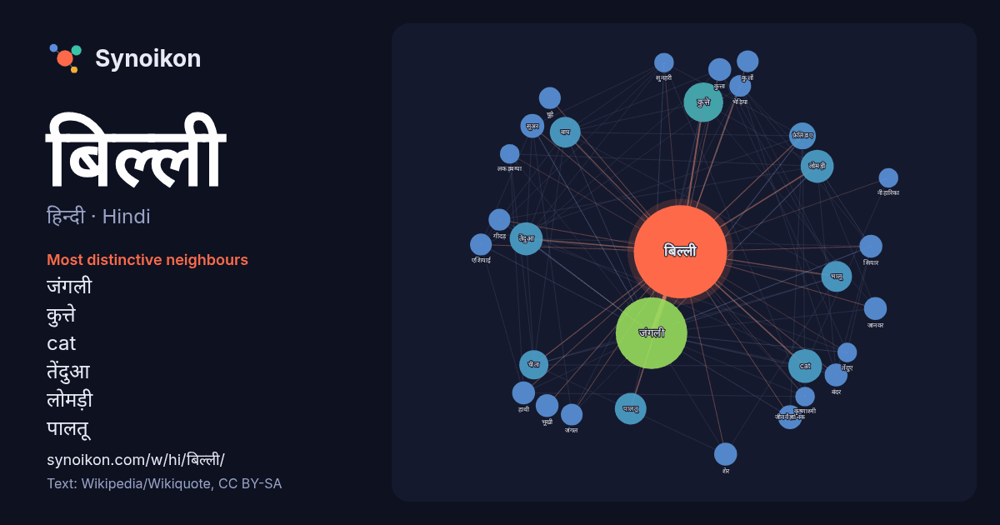

हिन्दी · Hindi · popular word
बिल्ली
“cat” · The words found around it in 793 instances from Hindi Wikipedia, Wikiquote.

Most distinctive neighbours
- जंगली 88×
- कुत्ते 30×
- cat 25×
- तेंदुआ 23×
- लोमड़ी 23×
- पालतू 20×
- बाघ 19×
- भालू 19×
- चीता 18×
- फ़ेलिडाए 16×
- जीववैज्ञानिक 13×
- सूअर 12×
- सियार 12×
- भूखी 12×
- कुत्ता 11×
- बंदर 11×
- गीदड़ 11×
- भेड़िया 11×
- शेर 11×
- चूहे 10×
× = how many times more often than in general Hindi Wikipedia text.
Most frequent neighbours
- जंगली 108
- कुत्ते 33
- भारतीय 26
- cat 24
- तेंदुआ 23
- बड़ी 23
- लोमड़ी 23
- वाली 22
- पालतू 21
- नाम 20
- बाघ 20
- भालू 20
- जिसका 19
- चीता 18
- शामिल 16
- सिंह 16
- फ़ेलिडाए 15
- जाति 13
- जीववैज्ञानिक 12
- सूअर 12
In context
- जाने वाली बिल्ली को मारवाड़ी भाषा में 'मिनकी' तथा जंगली बिल्ली को 'बलारा' कहा जाता हैं। वहीं गुजराती भाषा में बिल्ली को 'बिलाडी' तथा जंगली ब … Wikipedia snippets · बिल्ली
- जंगली बिल्ली (Himalayan jungle cat), जिसका वैज्ञानिक नाम फ़ीलिस चाउस अफ़िनिस (Felis chaus affinis) है, भारतीय उपमहाद्वीप में मिलने वाली जंगली बिल्ली की एक Wikipedia snippets · हिमालय जंगली बिल्ली
- बिल्ली लोचन नीहारिका या बिल्ली की आँख नीहारिका (अंग्रेज़ी: Cat's Eye Nebula, कैट्स आय नॅब्युला), जिसे ऍन॰जी॰सी॰ ६५४३ और कैल्डवॅल ६ भी कहा जाता है, एक ग्रही … Wikipedia snippets · बिल्ली लोचन नीहारिका
- बड़ी बिल्ली की श्रेणी में सिंह, बाघ, तेंदुआ, चीता, जैगुअर, कूगर, हिम तेंदुआ, आमूर बाघ ऐसे जानवर आते हैं जो विडाल वंश के हों और घरेलू बिल्ली के विपरीत जंगल Wikipedia snippets · बड़ी बिल्ली
- बिल्ली एक ऐसी प्रजाति की बिल्ली है जिसका चेहरा गोल और मुँह छोटा होता है तथा उसके काफ़ी लंबे बाल होते हैं। यह अनुमान लगाया जाता है कि फ़ारसी बिल्लियों Wikipedia snippets · फ़ारसी बिल्ली
- जंगली बिल्ली (jungle cat) या दलदल बिल्ली (swamp cat), जिसका वैज्ञानिक नाम फ़ीलिस चाउस (Felis chaus) है, एक मध्यमाकार का बिल्लीनुमा स्तनधारी है जो भारतीय Wikipedia snippets · जंगली बिल्ली
- चीता बिल्ली (Leopard cat) भारतीय उपमहाद्वीप, पूर्वी एशिया और दक्षिणपूर्वी एशिया में मिलने वाली छोटी जंगली बिल्ली की एक जीववैज्ञानिक जाति है। सन् 2017 Wikipedia snippets · चीता बिल्ली
- बंटी और बिल्ली या बंटी बिल्ला और बब्बन एक भारतीय एनिमेटेड सीरीज है। इसका प्रसारण हंगामा टीवी से 15 मई 2015 से शुरू हुआ था। बिल्ली एक नारंगी बिल्ली। बंटी Wikipedia snippets · बंटी और बिल्ली
More Hindi words
- इतिहास
- ईश्वर
- कार्य
- कुत्ता
- गर्मी
- गाना
- घंटी
- घड़ी
- घोड़ा
- चाय
- चित्रकला
- छाया
- जंगल
- जलवायु
- जीवन
- तूफ़ान
- दर्पण
- द्वीप
- नक्षत्र
- नमक
- परिवार
- पहाड़
- पानी
- पैसा
- प्रकृति
- बगीचा
- भाषा
- भोजन
- माता
- मानचित्र
- मृत्यु
- मौन
- रेगिस्तान
- रेलगाड़ी
- रोटी
- वर्षा
- विज्ञान
- शक्ति
- शरद
- शहद
- शहर
- सड़क
- सत्य
- समय
- सर्दी
- सेतु
- स्वर्ण
- स्वास्थ्य
- हृदय
Precomputed on 2026-10-09 with default settings (±5 words, medium corpus). The interactive map can refresh it with live data.